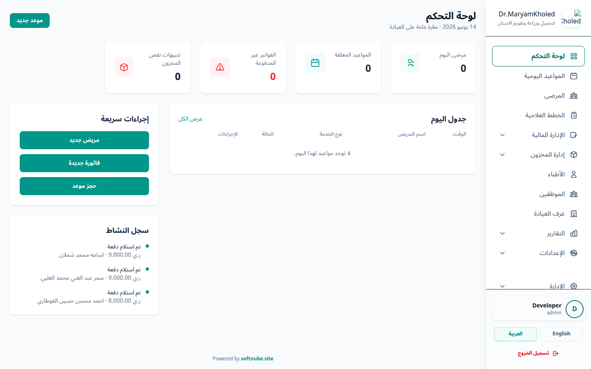
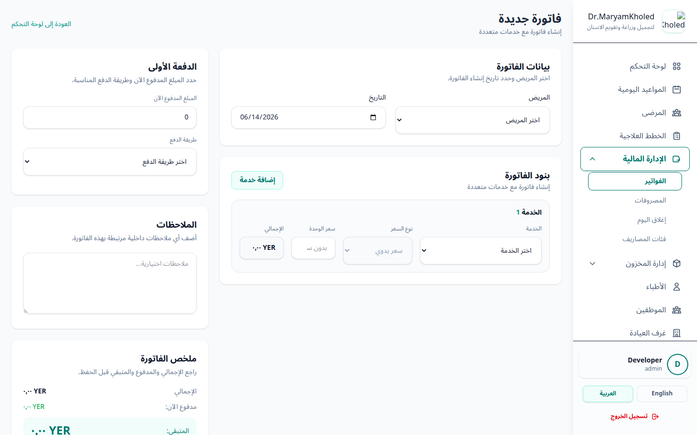
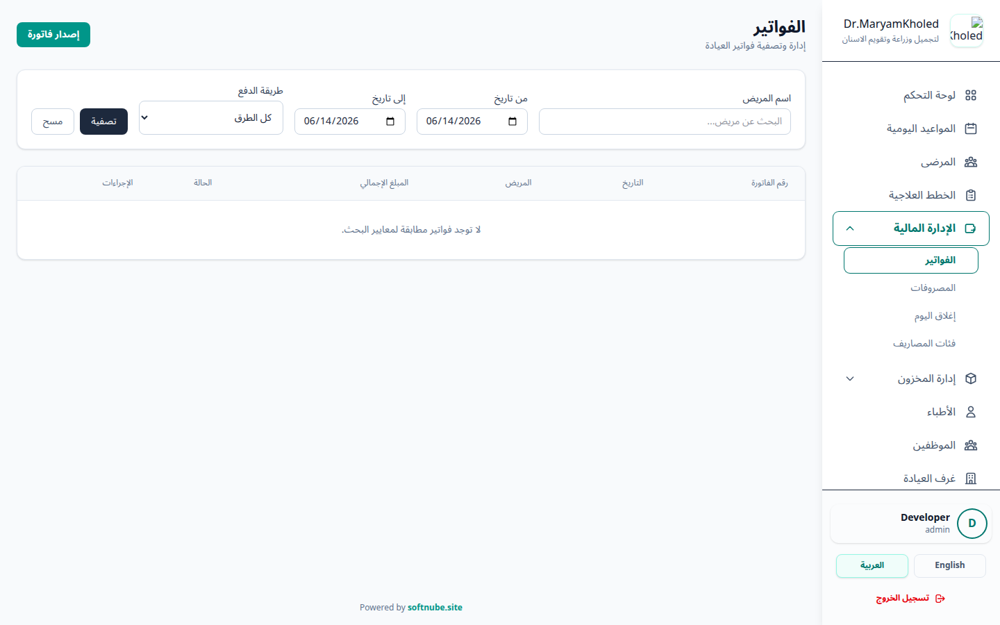
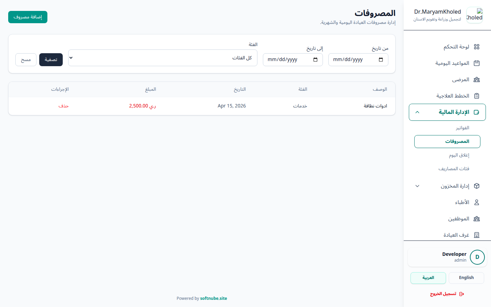
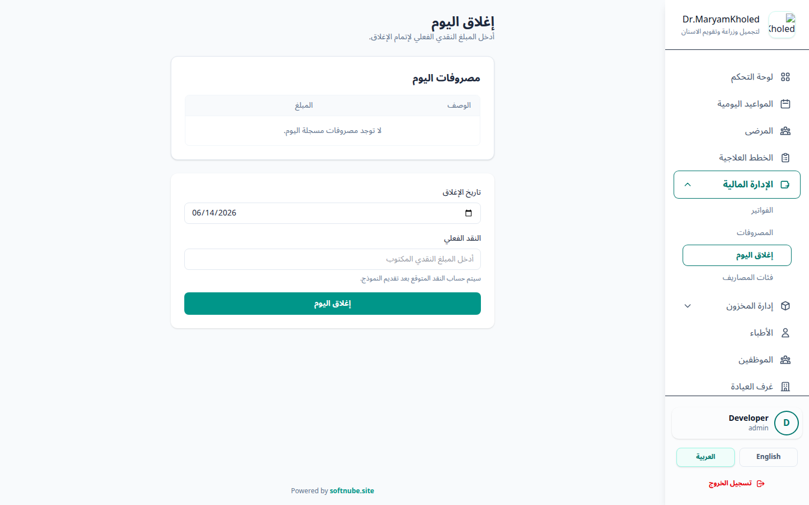
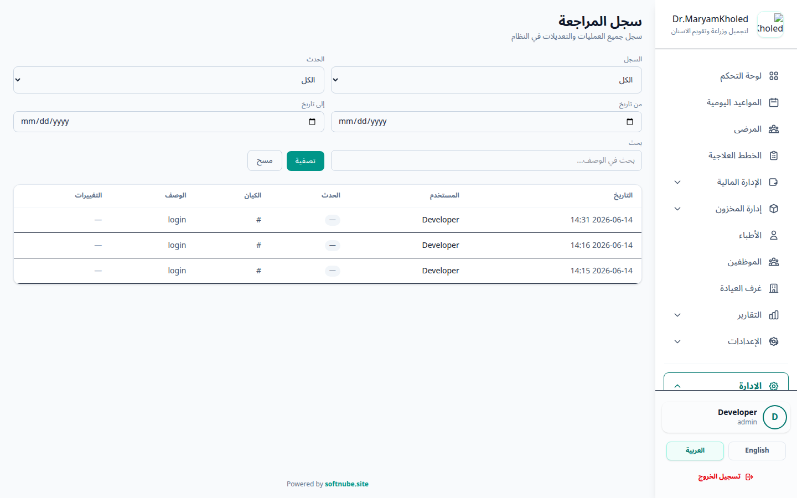

نظرة عامة على القسم المالي
يتضمن تبويب «الإدارة المالية» في القائمة الجانبية جميع الأدوات اللازمة لإدارة الدورة المالية الكاملة للعيادة. يمكنك الوصول إليه من القائمة الجانبية بالضغط على «الإدارة المالية» لفتح القائمة الفرعية.
الأقسام الفرعية:
- الفواتير: إنشاء وإدارة ومتابعة فواتير المرضى — سواء فواتير خدمات مباشرة أو فواتير مرتبطة بخطط علاجية.
- المصروفات: تسجيل ومتابعة جميع مصروفات العيادة اليومية من رواتب ومشتريات وصيانة وغيرها.
- إغلاق اليوم: مطابقة النقد الفعلي في صندوق العيادة مع المبالغ المسجلة في النظام يومياً.
- فئات المصروفات: تنظيم المصروفات ضمن فئات (مثال: رواتب، مواد طبية، إيجار، صيانة).

عرض وتصفية الفواتير
للوصول إلى قائمة الفواتير، اضغط على «الإدارة المالية» ← «الفواتير» من القائمة الجانبية. تعرض هذه الصفحة جدولاً بجميع الفواتير المسجلة في النظام مع إمكانية البحث والتصفية.
أدوات التصفية:
- من تاريخ / إلى تاريخ: تحديد نطاق زمني لعرض الفواتير الصادرة خلاله. يتم تحديد تاريخ اليوم تلقائياً عند فتح الصفحة.
- اسم المريض: البحث عن فواتير مريض محدد بإدخال اسمه أو جزء منه.
- طريقة الدفع: عرض الفواتير التي تم دفعها بطريقة محددة (نقداً، تحويل بنكي، إلخ).
معلومات الجدول:
- رقم الفاتورة: رقم تسلسلي فريد بصيغة INV-00010
- التاريخ: تاريخ إصدار الفاتورة.
- اسم المريض: المريض المرتبط بالفاتورة.
- المبلغ الإجمالي: المبلغ الكلي للفاتورة.
- حالة الفاتورة:
- ✅ مدفوع — تم سداد كامل المبلغ.
- ⏳ جزئي — تم سداد جزء والباقي معلق.
- ❌ غير مدفوع — لم يتم تسجيل أي دفعة بعد.
- الإجراءات: زر «عرض» للدخول لتفاصيل الفاتورة وزر «حذف» (يتطلب صلاحية خاصة).

إصدار فاتورة جديدة
لإنشاء فاتورة خدمات مباشرة (غير مرتبطة بخطة علاج)، اضغط على زر «إصدار فاتورة» في أعلى صفحة الفواتير.
- اختيار المريض: ابحث عن اسم المريض في القائمة المنسدلة واختره. إذا لم يكن المريض مسجلاً بعد، يجب إضافته أولاً من قسم المرضى.
- تاريخ الفاتورة: يتم تعيين تاريخ اليوم تلقائياً، ويمكنك تعديله عند الحاجة.
- إضافة بنود الفاتورة:
- انقر على زر «إضافة خدمة» لإضافة بند جديد.
- اختر الخدمة المطلوبة من القائمة المنسدلة.
- إذا كانت الخدمة تملك أكثر من شريحة سعر (شرائح أسعار): يظهر حقل «نوع السعر» لاختيار الشريحة المناسبة (مثلاً: سعر عادي، تأمين، خصم). بمجرد اختيار الشريحة يتم ملء سعر الوحدة تلقائياً بحسب الشريحة المحددة، ويُقفل حقل السعر اليدوي فلا يمكن تعديله يدوياً.
- إذا كانت الخدمة لا تملك شرائح أسعار: أدخل سعر الوحدة يدوياً في حقل السعر.
- يُحسب إجمالي البند تلقائياً ويُعرض في عمود «الإجمالي».
- يمكنك إضافة عدة بنود بتكرار الخطوة.
- الدفعة الأولى (اختياري): إذا أراد المريض الدفع فوراً — أدخل المبلغ واختر طريقة الدفع. إذا كانت الطريقة تتطلب رقم مرجعي (مثل التحويل البنكي)، أدخل رقم الحوالة.
- الملاحظات: أضف أي ملاحظات إضافية (اختياري).
- مراجعة الملخص: تحقق من الإجمالي والمبلغ المدفوع والرصيد المتبقي في ملخص الفاتورة.
- اضغط على زر «إنشاء الفاتورة» لحفظ الفاتورة.

تفاصيل الفاتورة وإدارة الدفعات
عند الضغط على زر «عرض» بجانب أي فاتورة في القائمة، تفتح صفحة تفاصيل الفاتورة التي تعرض جميع المعلومات والإجراءات المتاحة.
محتويات صفحة التفاصيل:
- بيانات الفاتورة: رقم الفاتورة، التاريخ، اسم المريض، نوع الفاتورة (عادية أو خطة علاج)، والحالة.
- بنود الفاتورة: جدول يعرض كل خدمة بأعمدة: الخدمة، السعر، الإجمالي (لا يوجد عمود للكمية).
- ملخص مالي: يوضح المبلغ الإجمالي، إجمالي المدفوع، والرصيد المتبقي.
سجل المدفوعات (سندات القبض):
- يعرض جدولاً بكل الدفعات التي تمت على هذه الفاتورة.
- كل دفعة تحمل رقم سند قبض فريد بصيغة RCP-2026-0002.
- يظهر لكل دفعة: المبلغ، طريقة الدفع، التاريخ، رقم المرجع (إن وجد).
- يمكنك طباعة سند القبض لأي دفعة بالضغط على زر «🖨️ سند قبض».
إضافة دفعة جديدة:
- تأكد أن الفاتورة لا تزال تحتوي على رصيد متبقي (الحالة: غير مدفوع أو جزئي).
- في قسم «إضافة دفعة» أسفل الصفحة، أدخل المبلغ المدفوع.
- اختر طريقة الدفع (نقداً، تحويل بنكي، شبكة، إلخ).
- إذا تطلبت الطريقة رقم مرجعي — أدخله في حقل «رقم الحوالة».
- حدد تاريخ الدفعة (يتم تعيين اليوم تلقائياً).
- اضغط على زر «تسجيل دفعة».
طباعة الفاتورة:
يمكنك طباعة الفاتورة الرسمية بصيغة A4 بالضغط على زر «طباعة الفاتورة (A4)» أسفل الصفحة. تتضمن المطبوعة شعار العيادة وبيانات المريض وتفاصيل البنود والمدفوعات.

فوترة خطط العلاج
يدعم النظام إنشاء فواتير مرتبطة بخطط العلاج مباشرة. يمكن الوصول لهذه الميزة من صفحة خطة العلاج نفسها.
- انتقل إلى قسم «خطط العلاج» من القائمة الجانبية.
- ادخل على خطة العلاج المطلوبة.
- اضغط على زر «إنشاء فاتورة» أو «تسجيل دفعة» (حسب ما إذا كانت الفاتورة موجودة سابقاً أم لا).
- سيتم عرض نموذج خاص يتضمن:
- بيانات خطة العلاج والمريض تلقائياً.
- جلسات العلاج المتاحة (غير الملغية) لربطها بالفاتورة.
- الخدمات العلاجية فقط (المخصصة لخطط العلاج).
- أضف بنود الفاتورة واربطها بالجلسات المناسبة.
- سجّل الدفعة الأولى إن رغبت.
- اضغط على «حفظ».
- كل خطة علاج يمكن أن تملك فاتورة واحدة فقط.
- بعد إنشاء الفاتورة، يمكنك تعديل البنود وإضافة دفعات متعددة.
- إذا كانت الخطة بحالة «مكتملة»، لا يمكن تعديل بنود الفاتورة (مقفلة).
- لا يمكن أن يتجاوز إجمالي بنود الفاتورة المبلغ الكلي لخطة العلاج.
إدارة المصروفات
لإدارة المصروفات اليومية للعيادة، انتقل إلى «الإدارة المالية» ← «المصروفات» من القائمة الجانبية.
عرض وتصفية المصروفات:
- تصفية بالتاريخ: حدد نطاق زمني (من تاريخ / إلى تاريخ) لعرض مصروفات فترة محددة.
- تصفية بالفئة: اختر فئة المصروف من القائمة المنسدلة (مثال: رواتب، مواد طبية).
- يعرض الجدول: الوصف، الفئة، المبلغ، التاريخ، وزر الحذف.

إضافة مصروف جديد:
- اضغط على زر «إضافة مصروف» في أعلى صفحة المصروفات.
- أدخل وصف المصروف (مثال: «فاتورة كهرباء شهر يونيو»، «سلفة من راتب الموظف أحمد»).
- اختر فئة المصروف المناسبة من القائمة المنسدلة.
- إذا كانت الفئة مرتبطة بالموظفين (مثل: رواتب، سلف)، سيظهر حقل إضافي لاختيار اسم الموظف.
- أدخل المبلغ.
- حدد التاريخ.
- اضغط على «حفظ المصروف».

إغلاق الصندوق اليومي
تُعد عملية إغلاق الصندوق اليومي من أهم الإجراءات المالية اليومية. تتيح هذه الميزة مطابقة المبالغ النقدية الفعلية الموجودة في صندوق العيادة مع المبالغ المسجلة في النظام.
للوصول إليها: «الإدارة المالية» ← «إغلاق اليوم».
- تأكد من التاريخ: يتم تحديد تاريخ اليوم تلقائياً. يمكنك تغييره لإغلاق يوم سابق.
- مراجعة المصروفات: يعرض النظام تلقائياً قائمة بجميع المصروفات المسجلة لنفس اليوم، حتى تتمكن من مراجعتها قبل الإغلاق.
- إدخال النقد الفعلي: عدّ النقد الموجود في صندوق العيادة وأدخل المبلغ في حقل «النقد الفعلي».
- اضغط على «إغلاق اليوم».
- عرض النتائج: سيقوم النظام بـ:
- حساب النقد المتوقع = (مجموع المدفوعات النقدية) − (مجموع المصروفات).
- مقارنة النقد المتوقع مع النقد الفعلي.
- عرض الفرق — إذا كان موجباً فهو زيادة، وإذا كان سالباً فهو عجز.

فئات المصروفات
يمكنك إدارة فئات المصروفات من «الإدارة المالية» ← «فئات المصروفات». تساعد الفئات في تنظيم المصروفات وتسهيل إعداد التقارير.
إمكانيات الإدارة:
- إضافة فئة جديدة: حدد اسم الفئة وما إذا كانت مرتبطة بالموظفين أم لا.
- تعديل فئة: تحديث اسم الفئة أو خاصية الارتباط بالموظفين.
- حذف فئة: حذف فئة لم تعد مستخدمة.


الصلاحيات المطلوبة
يعتمد النظام على نظام صلاحيات مفصّل. الجدول التالي يوضح الصلاحيات المطلوبة لكل عملية في القسم المالي:
| العملية | الصلاحية المطلوبة | الوصف |
|---|---|---|
| عرض قائمة الفواتير | invoices.view | عرض جدول الفواتير وتصفيتها |
| إنشاء فاتورة | invoices.create | إصدار فاتورة جديدة |
| تعديل فاتورة | invoices.edit | تعديل بيانات الفاتورة وبنودها |
| حذف فاتورة | invoices.delete + financial.delete | حذف الفاتورة — يتطلب صلاحيتين معاً |
| تسجيل دفعة (سند قبض) | invoices.payments أو payments.create | إضافة دفعة على الفاتورة — يكفي امتلاك إحدى الصلاحيتين |
| طباعة فاتورة / سند قبض | invoices.print | طباعة الفاتورة أو سند القبض بصيغة A4 |
| عرض المصروفات | expenses.view | عرض قائمة المصروفات وتصفيتها |
| تسجيل مصروف | expenses.create | تسجيل مصروف جديد |
| حذف مصروف | expenses.delete + financial.delete | حذف مصروف — يتطلب صلاحيتين معاً |
| إغلاق الصندوق اليومي | daily-closings.create | فتح صفحة الإغلاق وتنفيذ إغلاق الصندوق (صلاحية daily-closings.view تخص عرض قوائم الإغلاقات فقط) |
| إدارة فئات المصروفات | expense-categories.view | عرض وإدارة فئات المصروفات |
سجل المراجعة والعمليات (Audit Logs)
يوفر النظام سجلاً متكاملاً لمراقبة ومراجعة كافة العمليات التي تحدث في النظام (إضافة، تعديل، حذف، تسجيل دخول، إلخ) لضمان الشفافية والأمان ومعرفة من قام بكل إجراء وتاريخه.
كيفية الوصول إلى سجل المراجعة:
من القائمة الجانبية، انتقل إلى قسم «الإدارة» ← «سجلات المراجعة».
لماذا قد لا يظهر سجل المراجعة في القائمة الجانبية؟
- صلاحيات الوصول: يتطلب هذا القسم صلاحية خاصة وهي audit-log.view، أو أن يكون الحساب يملك دور Super User (مدير النظام الأكبر).
- عدم ظهور الصلاحية في صفحة الصلاحيات: إذا لم تظهر الصلاحية في لوحة التحكم الخاصة
بالأدوار والصلاحيات، فهذا يعني أن السيدر الخاص بالصلاحيات بحاجة لإعادة تشغيل لتحديث قاعدة البيانات.
يمكنك تشغيل الأمر التالي في سطر الأوامر لتحديث الصلاحيات فوراً:
php artisan db:seed --class=RolesAndPermissionsSeeder
محتويات صفحة سجل المراجعة:
- المستخدم: اسم الموظف/المستخدم الذي قام الإجراء.
- الحدث (Event): نوع العملية (إنشاء created، تعديل updated، حذف deleted).
- القسم (Model): الجدول أو الكائن المتأثر (مثال: الفواتير، المرضى، المواعيد).
- التفاصيل (Payload): البيانات القديمة والجديدة التي تم تعديلها للمقارنة ومعرفة الحقول المعدلة بدقة.
- التاريخ والوقت: وقت حدوث العملية بالثانية.
